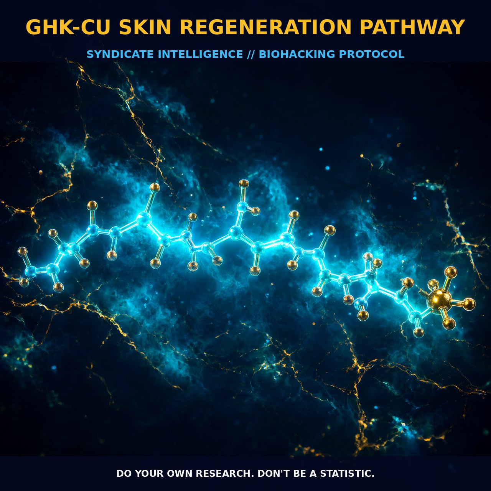

GHK-Cu: The Skin Regeneration Pathway

The Mechanism
The GHK-Cu peptide, a naturally occurring compound found in human plasma, saliva, and urine, plays a pivotal role in skin regeneration and wound healing. Synthesized from glycyl-L-histidyl-L-lysine (GHK), this peptide forms a complex with copper 2+ (Cu2+), becoming the active GHK-Cu. This complex has been shown to accelerate wound healing and skin repair by stimulating both the synthesis and breakdown of collagen and glycosaminoglycans. GHK-Cu also modulates the activity of metalloproteinases and their inhibitors, promoting the synthesis of collagen, dermatan sulfate, chondroitin sulfate, and the small proteoglycan decorin. This intricate balance of synthesis and breakdown ensures a dynamic environment for tissue repair and regeneration.
Moreover, GHK-Cu attracts immune and endothelial cells to the site of injury, fostering a robust healing response. It also increases the proliferation of keratinocytes and fibroblasts, essential cells for skin repair. The peptide's ability to reset DNA to a healthier state by up- and downregulating at least 4,000 human genes further enhances its regenerative potential. This multifaceted action of GHK-Cu in promoting tissue repair is not limited to skin; it extends to various other tissues such as lung connective tissue, bone, liver, and stomach lining. The peptide's wide-ranging effects on tissue repair highlight its importance in maintaining overall tissue health and regeneration.
Biological Leverage
GHK-Cu exerts its effects through a variety of cellular pathways that support skin regeneration and repair. One of the primary mechanisms involves the stimulation of collagen synthesis and breakdown, which are crucial for maintaining skin integrity and elasticity. Collagen, a major component of the extracellular matrix, provides structural support and resilience to the skin. GHK-Cu facilitates the biosynthesis of collagen and its cross-linking, thereby promoting the formation of stable collagen fibers. Additionally, GHK-Cu activates the expression of collagenases, enzymes that degrade collagen, to maintain a balanced environment for tissue remodeling.
The peptide also enhances the synthesis of glycosaminoglycans (GAGs), such as dermatan sulfate and chondroitin sulfate, which are essential for maintaining the hydration and resilience of the extracellular matrix. These GAGs contribute to the elasticity and moisture retention of the skin, further supporting its regenerative capacity. GHK-Cu's modulation of metalloproteinases and their inhibitors ensures a controlled environment for matrix degradation and synthesis, thereby promoting the dynamic remodeling of the extracellular matrix.
Furthermore, GHK-Cu enhances angiogenesis, the formation of new blood vessels, which is critical for delivering nutrients and oxygen to the regenerating tissue. It also stimulates the growth of nerve outgrowths, which can improve sensory function and promote healing. The peptide's ability to attract immune and endothelial cells to the injury site enhances the immune response and facilitates the formation of new blood vessels, thereby supporting tissue repair. These biological levers collectively contribute to the robust and efficient regeneration of skin and other tissues.
Tactical Implementation
To harness the regenerative potential of GHK-Cu, biohackers can adopt several practical strategies. Topical application remains a popular method, with GHK-Cu and its derivatives, such as Pal-GHK, being incorporated into various cosmetic products. These formulations are designed to improve skin density, elasticity, and firmness, reduce fine lines and wrinkles, and protect against photodamage and hyperpigmentation. However, the effectiveness of these products may vary due to the peptide's hydrophilicity, which limits its permeability through the skin.
To enhance the penetration of GHK-Cu, microneedle technology offers a promising approach. Microneedle arrays can create microconduits in the skin, facilitating the delivery of GHK-Cu and increasing its absorption. This method has been shown to significantly enhance the permeation of GHK-Cu into the skin, leading to improved efficacy. When using microneedles, it is essential to apply the peptide solution immediately after pretreatment to maximize absorption.
Dosage and timing are critical factors in the implementation of GHK-Cu regimens. While specific dosing guidelines are not well established, biohackers can experiment with low-to-moderate amounts of GHK-Cu in their skincare routine. A typical regimen might involve applying a solution of GHK-Cu once or twice daily, focusing on areas of the skin requiring regeneration or repair. Consistency is key, as prolonged use can yield better results over time.
Stacking GHK-Cu with other compounds can further enhance its effects. For instance, combining GHK-Cu with retinol and hyaluronic acid may provide synergistic benefits for skin hydration and repair. Retinol promotes cell turnover and collagen production, while hyaluronic acid enhances moisture retention, creating an optimal environment for GHK-Cu to act. Additionally, incorporating natural vitamins and antioxidants can support cellular health and enhance the regenerative capacity of the skin.
Prostar Life Hack
Enhance the penetration of GHK-Cu using microneedle technology for better absorption and efficacy.
[ AUTHOR: LEAD TECHNICAL RESEARCHER ]